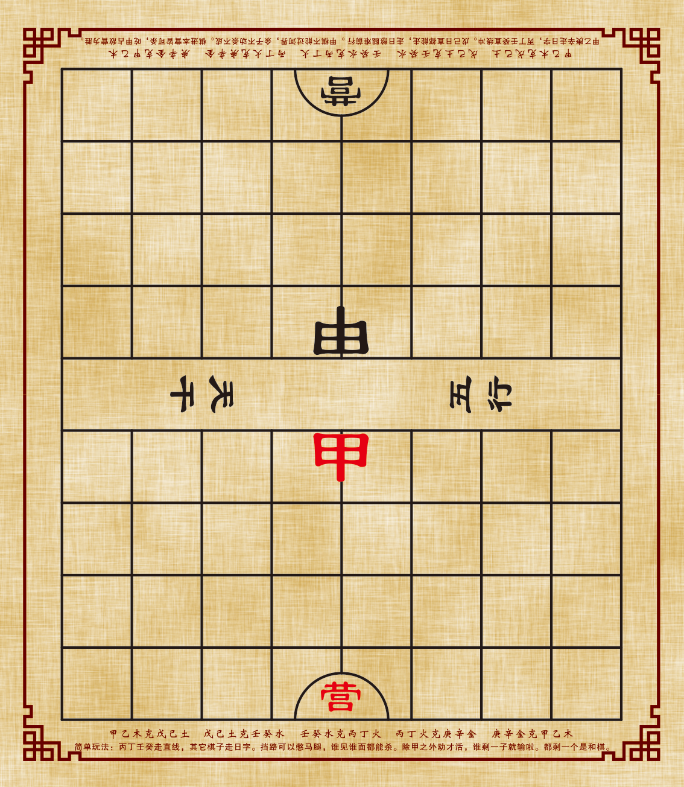

对方请求重新开始本局,是否同意?
输入相同房间号,匹配对手
房间号 · 分享给对手
点击可复制房间号
输入对方给你的房间号
输入4位数字,如"3741""5298"
选择你的棋子颜色
对方申请结束本局对局,是否同意?
丙、丁、壬、癸走直线，其他棋子走日字。
挡路可以憋马腿，谁见谁面都能杀。
除甲之外的棋子没移动之前第一步不能杀别的棋子也不被杀，移动之后才可以杀和被杀。
双方各剩一子和棋，谁剩一子则对方获胜。
① 输入用户名登录。初次登录系统自动生成用户名和4位密码，获200积分。
② 对弈双方：一方点击"创建房间"，一方点击"输入房间号"加入。
③ 限时规则：该走棋方思考超过60秒则被系统自动走棋。
④ 悔棋规则：双方各有三次悔棋机会，需对方同意。
⑤ 重开/退出：重新开局或退出房间的操作需征得对方同意。
⑥ 违规扣分：直接关闭浏览器退出，扣20积分。
🏆 胜方+10分 · 负方-5分 · 负分可继续玩
对方已退出房间,本局对局结束
v2-0427